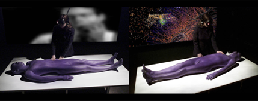
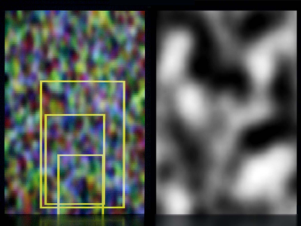
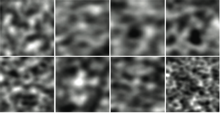

THEORY BEYOND THE CODES
CTheory Interview
Digital Inflections: The Einstein's Brain Project
"[B]odies are never event bound and event defined, but event defining -- and always at the point of becoming. This is a continual shudder across our work -- the body as an ever-receding event horizon. A hole in the fabric of the world, a non-alibi, a white hole."
-- Einstein's Brain Project
Introduction
What does the world look like when we turn out the lights? Does it not first surprise us -- not with nothingness but with a dance of after-images which, fading, are transformed into patterns of visual noise? And, even after the noise begins to fade, does not the imagination kick in -- whether dreams of day or night or blind-spot hallucinations of what would be there if only the eyes were open to see? It is as if the closed eye compels a cognitive hyperactivity that ensures there will always be something to see, even when that vision has no real correlation to the world around us. Even the closed eye knows no solace from the visual.
One imagines that for the camera the situation is different -- the camera not being subject to false appearances as a result of what was seen a second before the room went dark. The camera does not know darkness -- the camera knows only the nothingness that is a pure absence of stimulus.
Or so one might imagine...
But the real question is whether machines can imagine too, whether in the darkness there is anything that might cause the machines to see as humans do -- to see things where there are none, and to recognize within these visual mistakes optical or aesthetic possibilities? Maybe not on purpose, but when properly configured even cameras can be made to see in the dark -- and to make up images where there would otherwise be none. Consider the possibilities of the following scenario -- seen for the ways it might make the machines themselves imagine:
A camera and a sensitive microphone are turned on, but enclosed in a completely light tight, anechoic box. They record no image, receive no light and sense no sound. The camera input is adjusted with maximum gain and brightness to reveal the video noise inherent in the system. This noise provides a medium that can potentially be modified by external electromagnetic forces. [...] Face tracking algorithms using a cascade of Haar classifiers scan the random noise in each video frame and look for any combination of pixels that form the most basic characteristics of a human face -- areas that can be loosely characterized as eyes, nose and mouth with a sufficient degree of symmetry. When the software finds such a combination of pixels and symmetry the area is zoomed to full screen, its contrast and brightness adjusted, blurred and desaturated to clarify the found image. [1]
The project is called Einstein's Brain, a collaboration among Alan Dunning, Paul Woodrow and Dr. Morley Hollenberg, who have for more than a decade been examining the aesthetic possibilities of machinic rendering. Using a variety of biofeedback equipment, pattern recognition software and interactive media interfaces, the work of the Einstein's Brain Project (EBP) explores technology as an allegory for human consciousness, and human consciousness as a contributing participant in the development of our technological future.
In their words:
Einstein's Brain is a collaborative, immersive, virtual and augmented reality work that explores the notion of the brain as a real and metaphoric interface between bodies and worlds in flux, and that examines the idea of the world as a construct sustained through the neurological processes contained within the brain. It suggests that the world is not some reality outside ourselves, but that it is the result of an interior process that makes and sustains our body image and its relationship to a world, and that the investigation of virtual reality, its potential use as a perceptual filter, and its accompanying social space is an exploration of the new constructions of consciousness and the consequent technological colonization of the body. [2]
What follows is an edited series of electronic conversations with Alan Dunning and Paul Woodrow on aspects of recent EBP projects and ongoing topics of inquiry.
Ted Hiebert (for CTHEORY): First, thank you both for agreeing to this conversation, which I hope will also be an opportunity to highlight some of the very innovative work you are doing with your collaborative project, Einstein's Brain. In a general sense, I want to say that your work is about questions of digital subjectivity, consciousness and perception, though I know that for you it is also about a whole range of other things as well. In a pragmatic sense, however, what I think is truly unique about the work that you are doing is that it reverses the terms according to which technology is popularly understood -- not necessarily only an operational assistant to human productivity but as itself a series of interpretive systems that are subject to aesthetic renderings of various sorts.
Einstein's Brain Project (EBP): New technology always creates new aesthetic possibilities. What you have identified is our sense of technology as something that constantly generates analytical potentials that can be realised by systems that go beyond mere representation. One of our ongoing concerns has been with invisible energy fields as components that surround and attach themselves to us and to themselves, and a large part of our project has been to visualise these in ways that reveal and capitalize on their capacity to excite and instigate new structure and novel form. We have given ourselves over to the idea that technology is a form of life, and our work tries to suggest what kind of life this is.
CTHEORY: Your later work, in particular, emphasizes these ideas -- which I'll get to in a minute. First however, I want to contrast them a bit to your earlier work, which I think does this too but in a slightly different way. For those who aren't already familiar with the work you've done, I wonder if these earlier projects might not be important for the understanding of how your ideas have developed, and the nuances of your more recent projects.
Take, for instance, a project such as The Madhouse in which you had a sculpture of a human body coated with thermochromic paint, coupled with an EEG-enabled HUD, as trigger interfaces for audience interaction. When the viewer touched the model it changed color and, if I'm not wrong, the viewer's thoughts also interacted with a programmed database to provide a series of EEG-selected visuals. There are many things that are interesting about this project, among them the fact that you titled the body/sculpture ALIBI, as if to purposefully provoke the question of agency and placement when faced with the technological interface. In your later work, it becomes clear that this is not about using the technological as allegory for the human, but the opposite -- not subjecting the human body to the machine but purposefully subjecting machines to the human body. Not technology, as McLuhan had it, as that which extends the body outside of itself, but instead the body as that which forces technology to internalize -- adapting to the messiness of human input. In other words, this wasn't just about wiring bodies to the machines, but also an exploration of what happens when the relationship is seen the other way around.

ALIBI, Pandaemonium, 2002
EBP: ALIBI (Anatomically Lifelike Interactive Biological Interface), the interface to the Madhouse cycle of works, was conceived as an interface built around ideas of absence and invisibility, even as it was intended to be tangible and present. Its surface disappeared as the thermochromic paint became transparent at a certain temperature, creating a fleeting index of a touch. Its main interactions were enabled by moving within large invisible, electromagnetic fields that encircled the body. These interactions enabled a participant to navigate a complex virtual 3D environment that was generated on-the-fly by evoked potentials harvested by an EEG equipped HMD.
ALIBI is entirely a non-alibi -- a direct interface to a boundary that is diffuse -- neither properly here nor there, akin to a dissipating, permeable boundary reminiscent of a rapture of the deep. Not protected, like the astronaut in his suit, from the coldness of space, but caught, like the diver, in the overwhelming desire to meld with the ocean.
The body was never conceived of as an interface per se but rather as a sensory blister caused by the friction between two ever-changing worlds -- the immediate past and the immediate future. This is more apparent in later work Ghosts in the Machine and The Sound of Silence, in which even the suggestion of an interface has been eliminated forcing us to imagine machines imagining a past and a future in lieu of a discernible present.
This comparison of machines wired to bodies or bodies wired to machines is interesting, and is one that has emerged through an imagining of both bodies and machines as organisms that are subject to the vagaries and whims of the other. It is this notion of affect that is important in how we have come to think about subjectivity. But in the end there might be less of a distinction than a polar comparison suggests. Our sense is that bodies and machines are inextricably enmeshed and their relationship constantly changes at speeds that are out of step with any mechanical or biological clocks. For us this problematises not just what such a body might be, but how we might locate such a body that is at one and the same time, both all too located, subject to the passage and ravages of time, but strangely, in technoetic enviroments, non-spatial and atemporal, as it is as is constantly re-defined as bio-illogical organism.
Our physical bodies might age, tire, change shape, and even disgust us, but are always remade when distributed by the technical apparatus. Where is the body that is super-distributed, that is omnipresent? The body is simultaneously present and absent -- fixed and present, mutating and absent -- always on the verge of becoming. The body is driven to new forms, new imagined and re-imagined forms, even as it posits itself as fixed entity.
For us, then bodies are never event bound and event defined, but event defining -- and always at the point of becoming. This is a continual shudder across our work -- the body as an ever-receding event horizon. A hole in the fabric of the world, a non-alibi, a white hole.
CTHEORY: In a curious way, might this have the effect of reversing the terms of phenomenal engagement as well -- or perhaps simply adapting them to the technological equation? One might even here propose something along the lines a techno-phenomenology, a type of phenomenology particular to the ways machines themselves inhabit this non-present that you describe. I agree that this sort of relationship is articulated in particularly poignant ways in recent installations such as The Sound of Silence and Ghosts in the Machine. These are the pieces referred to in the introduction to this interview, in which you enclose cameras and microphones in perceptually-vacant spaces so as to subject the technologies themselves to their own internal processing noise as stimulus for image and sound generation. With Ghosts in the Machine the interface is a light-tight box that contains a camera; with The Sound of Silence a sound-proof space with a microphone -- in both instances the technologies are wired to see or hear what is not there.
These two works interest me particularly because they make clear a number of larger trends in your collaboration -- among them a real refusal to let subjectivity off the hook when faced with questions of the invisible.
EBP: This descriptor of a proposed field of inquiry is good in its ambivalence. What you refer to are the sensory experiences associated with certain products of recent technological invention, mainly projected images and screen images -- otherwise we might say that all "images as artifacts" are products of technology and can talked about in some phenomenological context.
When it comes to the perception of an image we can talk about it as an event -- as Alva Noe has suggested -- a kind of action. It's an action that includes a relation, in fact a number of potential relations, between the observer and the observed. The difficulty in thinking about this is to make a true distinction between the observer and the observed, since there seems no clear dividing line between the two in an objective way. So in a sense when you talk about Einstein's Brain Project not letting subjectivity off the hook when it comes to the invisible, there are always in every action of perception imperceptible qualities that accompany those phenomena that we as observers acknowledge as perceptions. This is made more complex by that fact that the act of perception itself is virtual -- we are in the process of creating potentialities for possible worlds. How is this possible without a subject? But maybe this is not what you mean by letting subjectivity of the hook -- and for what?

Ghosts in the Machine 2008
CTHEORY: In the context of your later work, I think maybe this could be framed as a question of interactivity, specifically in the sense that you begin to engage subjectivity as a dialogic space, rather than one of incommensurability. There's an important distinction to be made here, I think, in terms of works that extend the human body and mind and those that also reciprocate -- beginning to challenge the machines themselves as well. To put terms to it, it might be called the difference between interactivity and interface, with the former demanding a reciprocal engagement that extends beyond the simple machine processing of human stimulus.
EBP: Interface suggests a plane at which a transition between two worlds occurs -- but in Ghosts in the Machine there is no membrane but an intermingling of two worlds at the atomic level. The interface in Ghosts in the Machine references an ongoing unexhibited work, Permeable City, looking at micro interfaces between skin and world. The interface in Ghosts is a sort of bio-noosphere in which machine and body are lost in the generative system. The work itself is actually invisible -- seeing only in its shadow: the flickering of pixels, the shapes of faces. The invisibility for us was occasioned by some ideas we had about the hypermorphic or prestomorphic -- the movement from one state to another at such a rapid rate that objects had neither form nor substance. In filmic terms this might be the gaps between the frames, but extended into a new space developing out of the movement towards non-linear modes of recording that allow the development of a completely fictive space wrapped in a non-solid and invisible moment.
CTHEORY: This is a wonderfully complex counter to some of the more aggressive theories of technology, such as those of Paul Virilio in which technology harvests and co-opts and, ultimately, renders obsolete the human face of data through its philosophy of "more, better, faster" -- suggesting that life, rendered informatically, cannot keep up to its technological potential. Yet, what interactivity demands, and what works like The Sound of Silence and Ghosts in the Machine deliver is a more human side to these same technologies. It's potentially a point of reversibility, where in a certain way technology cannot keep up to the simple question of human inadequacy. As a result the human experience is enriched as well -- or frustrated, depending on one's comfort level with these states of rendered invisibility -- rendered non-experience, perhaps.

Ghosts in the Machine 2008 1
EBP: The works to which you refer, Ghosts in the Machine and The Sound of Silence, contribute to the conscious awareness of the perceptual process. Brian Massumi talks about this process with real depth, comprehension and clarity. In his essay "The Thinking-Feeling of What Happens," clarifying Susan Langer's notion of semblance, Massumi concludes:
A semblance takes the abstraction inherent to object perception and carries it to a higher power. It does this by suspending the potentials presented. Suspending the potentials makes them all the more apparent, by holding them to visual form. The relays to touch and kinesthesia will not take place. These potentials can only appear, and only visually. The event that is the full-spectrum perception is and will remain virtual. A life dynamic is presented, but virtually, as pure visual appearance. [3]
Ghosts in the Machine and The Sound of Silence are works that create conditions for observers to consciously experience the potentiality of their own visual process and create a situation in which they are able to question the fixity of the world in which they presently inhabit -- to begin to discover the phenomenal world and its equivalences. The work is neither didactic nor demonstrational. What is important and interesting for us is that the participant in the work senses a series of contingencies, as if he or she is always on the threshold of being transformed -- its as if the work is able to create an feeling of anticipation within the viewer that exists within the work in another form.
CTHEORY: Indeed, there is something poignant about these works that frustrates the attempt to reduce them to demonstration -- perhaps it is as simple as to privilege the act of perceiving over any assumptions about the fixity of what is seen. Here, most obviously, you suggest that machines might be made to perceive information where there is nothing but their own internal processing mechanisms to witness. One might even go as far as to say that, in these works, you make the machines hallucinate, subjecting them to an absence of stimulus but insisting that they perceive anyways, and in turn harvesting this technological imaginary for its potentially recognizable patterns. Despite the fact that there is nothing to see, there are still images that appear and consequently processed experiences of one sort or another that, despite their errors, were nevertheless witnessed in one way or another.
EBP: Thomas Metzinger's theory of the phenomenal self-model is applicable to the work at a very elementary level. Metzinger's central notion is that no self exists, saying that all that has ever existed are conscious self-models that are not recognized as models, they are what he terms the phenomenal self. The phenomenal self is not a thing but a process. The subjective experience of being someone derives from a conscious information processing system. You are such a system, although it is transparent and you don't see it. But you see with it. Metzinger's central claim is that we confuse ourselves with the content of the self-model currently activated by the brain. According to Metzinger this conscious self-model allows an organism to conceive of its self as a whole and thereby to causally interact with its inner and outer environments in an entirely new and integrated and intelligent manner. This notion is reminiscent of V.S. Ramachandran's idea of the phantom body. What we seem to take on as our body is an image, derived from the body, that is projected to the brain in all its phenomenal hallucinatory qualities.
In reference to our work, it is in the process of experiencing technological hallucination that we construct our own bodies as hallucinations or, better still, as phenomenal. Yet, there is the desire for a light body, an immaterial body -- a body that doesn't necessarily carry a lot of baggage, that is not weighed down with knowledge -- a body that is ready to act, a bodily potential. This is what Metzinger suggests with his notion of the phenomenal self-model of subjectivity. The title of his book Being No One evokes the invisible. As an aside, Paul used to use Mr. Invisible as a pseudonym -- even though he might have been joking. So when you pose the question of interactivity as symptomatic of an emergent form of subjectivity it seems to make sense. However in current thinking about technology this type of interactivity doesn't seem to be widely acknowledged, as you point out in your initial statement.
CTHEORY: Is it possible then that what is hallucinated is ultimately secondary to the momentum responsible for hallucination? This strikes me as quite a new way to think the question of phenomenology -- not grounded in the tangibility of the senses, but grounded exactly in their potential for making mistakes. The concept would have precedents in things like Ramachandran's mirror treatment for phantom limb syndrome -- in which the mind is conscientiously "fooled" into seeing a limb where there is none -- or, in a strange technological twist, a remix of the Situationist concept of psychogeography as, in this context, a re-claiming of the urban environment through experiential psychoses. One might speak here of a technological psychosis that is less a demonization of technological subjectivity and more an acknowledgement that the mind on technology sees the world differently -- hallucinating or making mistakes in advance, so to speak.
This is what I meant also with the idea that your work refuses to let subjectivity off the hook -- namely for the invisibility that informs the horizon of encounter. I think the pseudonym Mr. Invisible is great -- and all the more provocative when mentioned in conversation. It becomes necessary to cast doubt in order to preserve the accuracy of the situation.
EBP: The idea that what is hallucinated is secondary to the momentum responsible for the hallucination is appealing. You are suggesting that there are these continuous flows that do not end up separating themselves as objects, but are potentialities that are on the threshold.
The notion of the potentiality of making mistakes is very strange. We have written about identifying something as something it is not. It's like the question of what is a proper hallucination. At the level of everyday life we are always involved in the construction of partial identities even with someone we know, because at the time of interaction we seem to want to use what is necessary as per the outcome of the interaction. We don't summon other data, even at the level of memory, when we engage in social interaction -- we can say that many of our actual dealings are with the currency of the virtual. When we are afraid to do something or feel it might be against the law, who is it we are addressing? It seems to be related to the notion of our own identity as being phantom. The example of being consciously fooled (in Ramachandran and the phantom limb) is reminiscent of Gibson's "consensual hallucination."
CTHEORY: In a sense, it might be seen as setting the machines up to fail, and harvesting from them the images of technological failure. Here, you have found a way to make the machines imagine -- and to turn this into a spectacle for the human witness. It is an exact reversal of the way the question is typically thought -- and it is both a humanization of the machines and a poignant insistence on the spectacle of failure. Here not only do the machines begin to hallucinate, but there are established protocols for understanding how they do so, and how to filter such hallucinations -- generally called noise -- out of the picture. Except that you have factored it into the picture instead -- pre-empting proper optical data in favor of that which requires machine interpretation.
EBP: If we want to be a bit more extreme, we could even ask the question whether machines possess a phenomenal self-model, and how it might be constituted? It would have to be a self-model without a consciousness. And of course it couldn't be something that machines possess on their own -- this wouldn't make any sense. However if we look at machines as not being independent from their operation, being (existence) and configuration would include a relation with humans -- then it is possible to think about this question in another way: the consciousness of machines comes from their relations to humans. Is this just another form of the cyborg, but reimagined with your thoughts on the "body as that which extends technology inside of itself" in mind -- a reverse cyborg?
One wonders whether all technology is an adaptation to human input -- as in the end it serves human purposes. But you are really talking about something else that has to do with essential humanness and perception. Think about the brain's capacity for recognition of the human/animal physiognomy -- faces. Looking for faces in technological data says something more about the function of the brain than the constituents of electronic signals. Searching for pattern in randomness has many implications.
Your notion of harvesting the technological imaginary is engaging and conjures up a new breed of farmers -- new crops, new tools, new food.
CTHEORY: The idea of the processed metaphor reminds me of what you have called the "prestomorphic" -- which I may have misinterpreted, but I think may still be worth following-up. It seems that discussions such as these, at a certain point, begin to reverse on themselves. The machines are made to hallucinate but their hallucinations are on purpose and with logic if not reason, yet no less substantial for their explanation. I want to say that the concepts become quickly about a logic of failure, except that I don't know that the concept of failure applies anymore in the system you have created -- which turns it immediately into something else.
At stake, perhaps, is the logic of pareidolia -- a logic that can never be self-evident because its very evidence relies on a transgression of logic. It is an improper hallucination that presents itself as a hallucination -- instead a hallucination must mistake itself as real -- making the mistake, rather than the image, the mechanism of the phenomenon. But this, again, just to confess in advance that I'm caught in the prestomorphic imagination of these dialogues -- catching up in retrospect to a conversation we've already had.
EBP: The pareidolic impulse, particularly in Ghosts in the Machine, is one that is predicated on a mistake -- an identification of something as something it is not -- i.e an index of something. This is not to our minds a hallucination proper but rather some sort of withheld or withdrawn revelation -- something on the point of being revealed, but immediately lost, through its very appearance, leaving only a felt event. The subject as a maker of meaning is compromised by the role that the subject is assigned. The subject is subjected to a flow of information that can never settle into any sort of coherence. The machine is lost in a machinic reverie, abandoned by the very means of its reverie -- a kind of psychotic break occasioned not by the interpretative capacities of the viewer, but simply by her presence or absence.
CTHEORY: But even the psychotic has momentum -- perhaps in this case the momentum of what you referred to as the "white hole" -- an intriguing concept. I'm not quite sure what to make of such an idea -- it is not quite a black-hole in rewind, yet the difference, if I understand, is temporal rather than directional. In some ways, perhaps, this is not unlike Walter Benjamin's angel of history, blown forward forcefully into the future by the wake of the accumulation of time. Here the wake comes first, followed by the historic accumulation -- as if to suggest that material history simply tags along, surfing the waves of momentum it will eventually cause. At some point before one reaches the future, the past catches up -- the event horizon is the condition of attraction, but attraction is the wake in advance -- defining the event horizon itself. I can understand why you alluded to this as a rapture, but if I understand correctly it would be a purposefully ambiguous rapture -- one of which one cannot quite be certain but within which one nevertheless is immersed?
EBP: The white hole enables some ideas about a constantly receding event horizon. In this system events are atemporal, but still spatialized, with no past or future -- but an imagined future past that reconstitutes itself as the present. Like frames of a film, the images in Ghosts in the Machine have disappeared before they are seen. The images are always receding, never quite disclosed, never quite seen -- but still persistent. The local becomes a distributed local -- n-dimensional, alocal and atemporal. Just as there isn't really a now, just sense that it is neither past nor yet to be, so there is an equivalent loss of here, just a sense of an impending there. Now these are synthetics displayed in all too substantial galleries and spaces, but this is where the work becomes most interesting for us. The constantly receding event and its connection to an invisible past, reconstitutes these spaces as n-dimensional, as rapturous.
CTHEORY: It's almost as if you're suggesting an answer to the question of whether a tree falling in the forest makes a noise if there's nobody there to hear it -- in this case the paradoxical answer is that one does not have to be in a forest to hear a tree fall. It's not a trompe l'oeil but a trompe logique -- perception that goes beyond telematic or non-local to become hyper-local -- so specific to context that its context has been internalized in advance. This is what I take you to mean with the term "prestomorphic" as well -- part physics part magic, but with perceptual effects that are immediate enough to demand acknowledgment, even if their status remains open to question.
EBP: Presto refers not only to the quickness of the metamorphic process, but also to its sleight of hand. Unseen, unheard, but present. Imagine a simple shape generated from the rapid oscillation between a cube and a sphere. Imagine that this happens at random speeds and at random intervals. At any one moment the shape is caught between two states -- total cube-ness and total sphericality. But if the noticed moment is always in the past, as it must be, then the object no longer occupies any space at all. It exists as a future presence (really a prescience), but not as a thing. The prestomorphic is a way to spatialize the irrational. We can imagine a past, a future past and a future, but not a present. The present, such as it is, is comprised of moments yet to come or already gone, constituting a never-now and never-here.
CTHEORY: The idea of the irrational is one we haven't really touched directly, but is really important to your work. This is perhaps the place where the question of interface returns as a framing of the rational or irrational -- from a human perspective these questions look quite different than from a technological perspective, even if the actual images we see are identical. I find it fascinating how your work extends this interpretive difference. You speak at some length about how the aim is to provide not only an event, but a context for the viewer and for the machine -- a situation of unbalanced potentialities that, perhaps, is intended as allegory for our own acts (or failures) of subjective processing.
EBP: The link with technologically induced states of mind is increasingly common -- technology is a state of being in which we partake. It's part of a flow that requires both subject and object in a continuous looping, stretching, expanding, contracting. As we have suggested before it's difficult to know exactly where one ends and other begins -- or even if there are beginnings and endings rather than just states in motions. When we talk about pareidolia as something being revealed and at the same immediately lost, one can see it as an index of uncertainty. This happens at the level of the image. If we consider painters like Rembrandt -- creating images to be seen at a distance, which upon closer examination transformed themselves into material, or Monet's Rheims cathedral series -- when approached dissolve into globs of paints. Can we say this about earlier television when the objects of our own perception disappear in a haze of projected light and pixels? Are not these images material hallucinations?
It is interesting that you speak of the machine's subjectivity, but difficult to begin to understand what you mean by the spectacle of failure -- unless you are suggesting that the noise factor is a subversion of the machine's function. There has been lots of creative use of techno failure in the in the 90's -- glitch music for example -- and more recently a whole host of experiments in authenticity revolving around ideas of sonic hauntology.
CTHEORY: That's a really interesting comparison that hadn't occurred to me -- but yes, isn't there something "glitch" to these works of pattern recognition? Your works are different in that they include an interrogation of agency and processing -- they are not reducible to an aesthetic formalism -- but still there is something similar in the project of rendering "something from nothing" so to speak. Perhaps the big difference has to do with the connotations of electronic voice phenomenon (EVP) -- your work raises the possibility that there is actually something there -- that the machines "see" something in the darkness that is not only noise, if only because the pattern recognition software in fact recognizes a pattern. It's almost as if this whole series of conversations could be summarized into a theory of consciousness as EVP -- subjectivity as that which translates noisy data into plausible patterns of recorded image and voice.
EBP: With the search for hallucinations in noise there are many possibilities for interpretation -- and a subjective component is always present. Another way of looking at noise is to see it as a bodily characteristic -- as energy. Also another factor is to be found in the way the brain operates -- formation and matching -- these are two fundamental actions, two flows that produce meaning, but it's always a fluid process. What you have said about potentiality and a new notion of phenomenology is really interesting -- it seems that what you are talking about is the introduction of time as a more vital component -- not time as space, but time as duration -- so you can have probability as well as indeterminacy. But there is a place for the senses, in terms of sensation -- the thinking/feeling, or feeling/thinking.
Earlier we talked about "the machine being lost in a machinic reverie abandoned by the very means of its reverie -- a kind of psychotic break occasioned not by the interpretative capacities of the viewer, but simply by her presence or absence... " The way into this is to think of the machinic reverie as a series of flows between the viewer and the machine, but the nature of these flows are marked by their intensities. This ties into the notion of the flows receding. There is a wonderful sentence in Bergson's Time and Free Will: "we shall see that time, conceived under the form of an unbounded and homogenous medium is nothing but the ghost of space haunting the reflective consciousness... "[4] This seems to connect to the white hole -- the notion of time as a fleeing ghost of space, and the use of terms like prestomorphic are entirely bound up with spatial formations. It seems like a version of Zeno's famous paradox where you are always half-way there, as if to ask the question of what is the dimension between 0 and 1.
CTHEORY: Well this is probably a very nice note to end on -- the prestomorphic note of a conversation caught between its catalyst and possible modes for continuation. A prestomorphic imagination, perhaps, as that which best represents what might be called an emergent theory of pareidolic subjectivity growing obliquely -- or rendered as machinic instantiation -- under the sign of the Einstein's Brain Project. Thank you both again for what I think has been a provocative and engaging conversation.
Notes
----------------
[1] Alan Dunning and Paul Woodrow, "Body from the Machine: the spectral flesh," Proceeding of the Digital Arts and Culture Conference, 2009, University of California, Irvine, 2009. Available online at: http://escholarship.org/uc/item/7hm6h6q2.pdf
[2] Ibid.
[3] Brian Massumi, "The Thinking-Feeling of What Happens," Inflexions 1.1 "How is Research-Creation?" (May 2008) www.inflexions.org
[4] Henri Bergson. Time and Free Will, New York: Dover Publications, 2001, p.99.
----------------
THE EINSTEIN'S BRAIN PROJECT was formed by two artists, Alan Dunning and Paul Woodrow in 1996, out of a common interest in an expanded field of art practice that included science and technology. The science was focused upon the brain and an investigation of consciousness. Dr. Morley Hollenberg, a pharmacologist and inter cellular communication expert, joined the collaboration perhaps a year later, bringing a knowledge of scientific methodology, theory, and research practices to the collaboration, that resulted in refining the Project's ideas about the possibilities of art and science as distinct yet symbiotic modes of inquiry.
The project's work is featured in several recent books, Transdisciplinary Digital Art: Sound, Vision and the New Screen, (Springer, 2008), Art and Electronic Media (Phaidon, 2009), Acting Bodies: Embodying Computing Power. Bodies, Memory and Technology, (University Press of America, 2009), New Realities: Being Syncretic, Consciousness Reframed (Springer Wien New York, 2009) and Art and Science (Thames and Hudson, 2010)
Additional information and samples of past projects can be found at: http://www.bodydegreezero.org
----------------
Alan Dunning has been working with complex computer supported installations for the past two decades. He has exhibited widely including group and solo shows in North and South America, Europe and the UK and is represented in many collections including the National Gallery of Canada, Ottawa, and the Museum of Modern Art, New York. He has received major research awards from the Canada Council, La Fondation Daniel Langlois, the Social Sciences and Humanities Research Council of Canada, the Association of Commonwealth Universities, and the Marion Fund. Alan Dunning currently teaches in the Media Arts and Digital Technologies at the Alberta College of Art and Design in Calgary, and is an Adjunct Professor in Computing Science at the University of Calgary.
Paul Woodrow has been involved in a variety of inter-disciplinary and multi-media activities since the late 1960s, including performance art, installation, improvised music, painting, and video. He was a co-founder of W.O.R.K.S., the internationally recognized performance group and has collaborated with many artists including Iain Baxter (N.E. Thing Co.), Hervé Fischer (The Sociological Art Group of Paris), Genesis P. Orridge (Coum Transmissions, England), and Clive Roberstson (W.O.R.K.S., Canada). His more recent work consists of multi-media installations, using video projection and sound. He has exhibited extensively since the early seventies, including at the 4th St. Petersburg Biennale (Russia) where he exhibited a version of the interactive VR work Einstein's Brain, the Museum of Modern Art in Stockholm (Sweden) the Tate Gallery (London), as well as in Japan, Belgium, Spain, France, Puerto Rico, Canada, the United States, and South America. Professor Woodrow has received numerous awards from the Canada Council for the Arts, The Social Sciences and Humanities Council of Canada and the Alberta Foundation for the Arts and currently teaches Art Theory and Studio at the University of Calgary.
Ted Hiebert is a Canadian visual artist and theorist. His artworks have been shown across Canada in public galleries and artist-run centres, and in group exhibitions internationally. His theoretical writings have appeared in, among others, The Psychoanalytic Review, Technoetic Arts, Performance Research and CTheory, as well as in catalogues and exhibition monographs. Hiebert is a member of the Editorial Board of CTheory, and an Assistant Professor in the Department of Interdisciplinary Arts & Sciences at the University of Washington Bothell. http://www.tedhiebert.net
(c) CTheory. All rights reserved.
© CTheory. All Rights Reserved